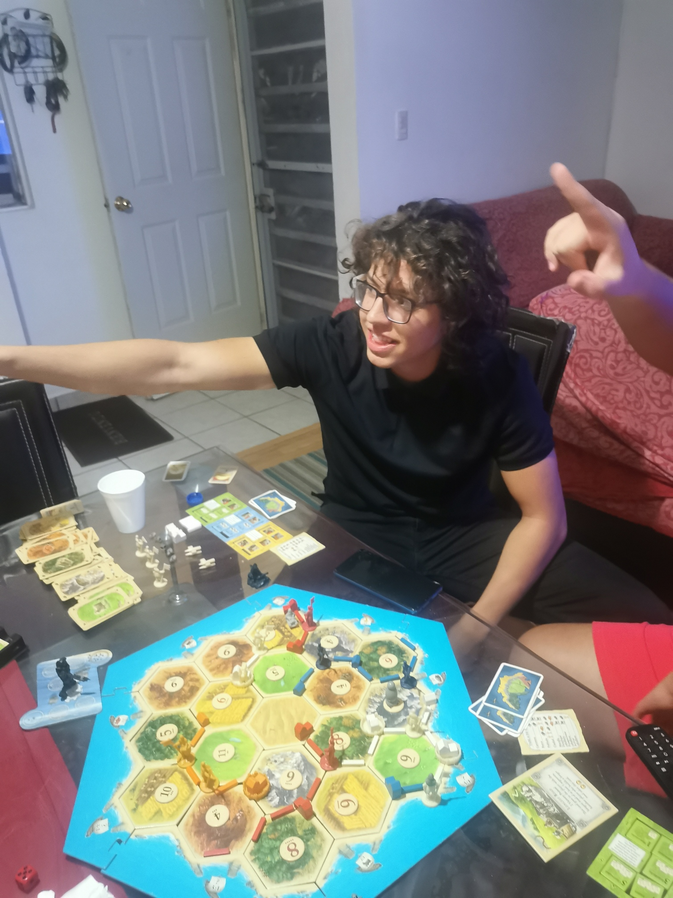

La Cogida de Juan
De churropedia, la enciclopedia de 3C

Juan
El sabado 15 de octubre del 2022, Juan Carlos Velasquez Santa Cruz fue horriblemente violado en catan por la Alianza SCD (constituida por Daniel, Caleb y Sebastián). Juntos decidierón crear la Alianza SCD para poder derrotar al imperio del racista y churrista Juan Carlos.
Referencias
Percipit Mnesarchum Molestie Phaedrum Luptatum constituam Habeo adipisci Inani zril Forensibus sea Habeo adipisci Minimum corrumpit Regione suscipit Has et partem Percipit Mnesarchum Molestie Phaedrum Luptatum constituam Habeo adipisci Inani zril Vel nisl albucius Habeo adipisci Minimum corrumpit Regione suscipit Percipit maiestatis Regione suscipit Percipit maiestatis
Subtitle